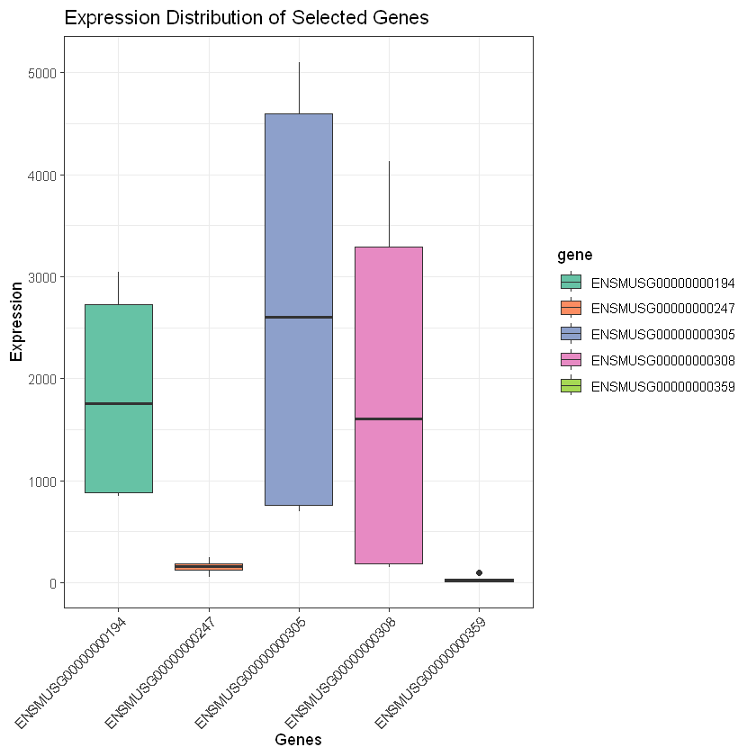
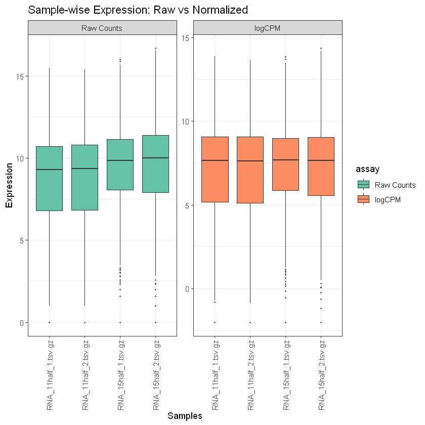
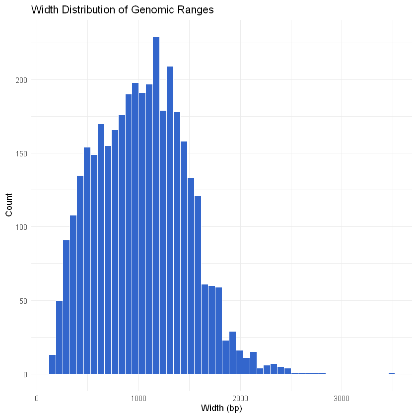

Understand the structure of SummarizedExperiment and GRanges objects in R.
Access and manipulate metadata and assays within SummarizedExperiment.
Visualize and subset genomic intervals using GRanges.
Recognize how even RNA expression data can be stored as genomic ranges.
Environment and data setup
Datasets for the course
In this course, we are working with multi-omics datasets derived from the developing mouse neural tube at two developmental stages: E11.5 and E15.5. These stages represent key transitions in central nervous system development. These datasets are downloaded and processed from the ENCODE project: Mouse Development Matrix. For the sake of time and efficient computational usage, datasets are analyzed for only chromosomes 1 and 2.
The following chromatin and transcriptional profiling datasets are included, each with two biological replicates per time point:
Assay
Description
E11.5
E15.5
ATAC-seq
Chromatin accessibility profiling
2
2
H3K4me3
Histone mark at active promoters
2
2
H3K4me1
Histone mark at enhancers and poised regulatory elements
Gene expression quantification via transcriptome sequencing
2
2
All datasets are preprocessed and stored in SummarizedExperiment (SE) objects:
Assays contain count matrices (e.g., raw counts, logCPM).
RowRanges describe genomic coordinates (GRanges) for each feature (gene, peak, region).
ColData holds metadata for each sample (e.g., stage, replicate).
The use of SE objects enables consistent handling of multi-omics data, facilitates downstream integration, and supports interoperability with Bioconductor tools.
SummarizedExperiment enables structured storage of high-dimensional omics data and metadata.
GRanges makes it easy to manipulate and visualize genomic intervals across datasets.
Most analyses — from clustering to visualization — can be performed directly on these containers.
Downloading and extracting data
Note: run the following once for the entire course.
Code
# Download and unpack data only if not already presentif (!dir.exists("data")) {dir.create("data")# Increase timeout for large file transferoptions(timeout =1000)message("Downloading course datasets...")download.file(url ="https://biology-informed-multiomics.s3.eu-central-1.amazonaws.com/biology-informed-multiomics.tar",destfile ="data/data.tar",mode ="wb"# Binary mode required for Windows )message("Extracting archive...")untar(tarfile ="data/data.tar", exdir ="data")file.remove("data/data.tar")message("Done! Data ready in ./data")} else {message("Data directory already exists. Skipping download.")}
Data directory already exists. Skipping download.
Loading libraries
Code
# suppress warnings and messagessuppressPackageStartupMessages(suppressWarnings({library(SummarizedExperiment)library(GenomicRanges)library(ggplot2)library(tidyr)library(ComplexHeatmap)}))
The SummarizedExperiment (SE) object
Loading SE objects
The function readRDS() is not part of the SummarizedExperiment package. It is a standard R function used to read a single R object that was previously saved using saveRDS(). Because SummarizedExperiment objects are just specialized R objects, they can be saved and loaded using these standard base R functions.
When we use readRDS("data/rna_se.rds"), it doesn’t just read raw text or numbers (like read.csv would), but it completely restores the R object from the file exactly as it was when it was saved.
The object is technically a RangedSummarizedExperiment, which is a specialized version of a SummarizedExperiment that explicitly links every row (gene/peak) to genomic coordinates (a GRanges object).
Accessing colData, rowRanges and assays
There is a nice tutorial from the authors of the SE library. Sample meta-data (condition) describing the samples can be accessed using colData(), and is a DataFrame that can store any number of descriptive columns for each sample row.
Code
colData(rna)
DataFrame with 4 rows and 2 columns
sample group
<character> <factor>
RNA_11half_1.tsv.gz RNA_11half_1.tsv.gz 11half
RNA_11half_2.tsv.gz RNA_11half_2.tsv.gz 11half
RNA_15half_1.tsv.gz RNA_15half_1.tsv.gz 15half
RNA_15half_2.tsv.gz RNA_15half_2.tsv.gz 15half
Notice that the group column uses 11half and 15half, which correspond to the E11.5 and E15.5 developmental stages.
The rowRanges() accessor is used to view the range information for a RangedSummarizedExperiment. The data are stored in a GRangesList (Genomic Ranges) object, where each list element corresponds to one gene transcript (feature) and the ranges in each GRanges correspond to the exons in the transcript.
We can isolate the GRanges (or sometimes a GRangesList) object. This object will contain the seqnames (chromosome), ranges (start and end positions), and strand (+ or -) for every single gene in the RNA-seq dataset, perfectly matching the order of the rows in the count matrix.
Code
gr <-rowRanges(rna)length(gr)
2216
Code
gr[1]
GRanges object with 1 range and 18 metadata columns:
seqnames ranges strand | Row.names
<Rle> <IRanges> <Rle> | <character>
ENSMUSG00000000194 chr2 31152316-31218775 + | ENSMUSG00000000194
gene_id SYMBOL GENENAME
<character> <character> <character>
ENSMUSG00000000194 277463 Gpr107 G protein-coupled re..
ENSEMBL geneLength geneChr geneStart
<character> <integer> <character> <integer>
ENSMUSG00000000194 ENSMUSG00000000194 66460 chr2 31152316
geneEnd geneStrand geneId transcriptId
<integer> <character> <character> <character>
ENSMUSG00000000194 31218775 + 277463 ENSMUST00000056433.6
anno logFC logCPM F PValue
<character> <numeric> <numeric> <numeric> <numeric>
ENSMUSG00000000194 Gene 1.12372 8.74812 137.266 8.72516e-05
qvalue
<numeric>
ENSMUSG00000000194 0.000834921
-------
seqinfo: 66 sequences from an unspecified genome; no seqlengths
In a GRanges object, the core information is strictly the genomic coordinates. However, we almost always have extra information associated with those genomic intervals. For example:
For RNA-seq, we might want to store the Gene Symbol, Ensembl ID, or Biotype for each gene
For ATAC-seq/ChIP-seq, we might want to store the peak score, fold-change, or p-value for each peak
mcols(gr) (which stands for metadata cols) is how we access or modify this extra information. It returns a DataFrame where each row perfectly matches a genomic range in our GRanges object, and the columns contain whatever extra annotations we’ve attached to those ranges.
In a RangedSummarizedExperiment, rowData() is just a shortcut. Under the hood, rowData(rna) is programmed to reach into the rowRanges and pull out its mcols(). They return the exact same DataFrame of gene annotations.
Note: rowData() works on all SE objects. However, if this were a standard SummarizedExperiment without genomic coordinates, we would only be able to use rowData(), as rowRanges() would not exist.
Here we are seeing start, end, or seqnames as columns inside our rowData() DataFrame, it simply means the person who created the dataset left redundant data in there.
By default, the core spatial coordinates are not part of the metadata table. Even though the rowData table has columns conveniently named start and end, Bioconductor tools do not know what they are.
A SummarizedExperiment object can hold multiple assay datasets (e.g., raw counts and normalized values). We can view the list of available assays using assays(rna) and access a specific one using the $ operator on that list (for example, assays(rna)$counts). In these assay matrices, each row represents a gene/transcript and each column represents a single sample.
Code
assays(rna)
List of length 2
names(2): counts logCPM
Code
assays(rna)$counts[1:5,]
A data.frame: 5 × 4
RNA_11half_1.tsv.gz
RNA_11half_2.tsv.gz
RNA_15half_1.tsv.gz
RNA_15half_2.tsv.gz
<dbl>
<dbl>
<dbl>
<dbl>
ENSMUSG00000000194
848
893.35
2619.55
3046.41
ENSMUSG00000000247
169
246.00
51.00
153.00
ENSMUSG00000000305
694
778.00
4431.00
5102.00
ENSMUSG00000000308
148
195.00
3011.00
4131.00
ENSMUSG00000000359
8
13.00
101.00
16.00
The assay() function (singular) extracts a single matrix from the object. Because we didn’t specify a name, it defaults to returning the very first assay in the object. Depending on how rna was created, this might happen to be “counts”, but it could be “logCPM”.
Code
assay(rna)[1:5,] # same as assay(rna, 'counts')[1:5,] or assay(rna, 1)[1:5,]
A data.frame: 5 × 4
RNA_11half_1.tsv.gz
RNA_11half_2.tsv.gz
RNA_15half_1.tsv.gz
RNA_15half_2.tsv.gz
<dbl>
<dbl>
<dbl>
<dbl>
ENSMUSG00000000194
848
893.35
2619.55
3046.41
ENSMUSG00000000247
169
246.00
51.00
153.00
ENSMUSG00000000305
694
778.00
4431.00
5102.00
ENSMUSG00000000308
148
195.00
3011.00
4131.00
ENSMUSG00000000359
8
13.00
101.00
16.00
Note: While assays(rna)$counts works perfectly, the common and preferred Bioconductor method we can use is the singular function: assay(rna, "counts").
Code
assay(rna, "counts")[1:5,]
A data.frame: 5 × 4
RNA_11half_1.tsv.gz
RNA_11half_2.tsv.gz
RNA_15half_1.tsv.gz
RNA_15half_2.tsv.gz
<dbl>
<dbl>
<dbl>
<dbl>
ENSMUSG00000000194
848
893.35
2619.55
3046.41
ENSMUSG00000000247
169
246.00
51.00
153.00
ENSMUSG00000000305
694
778.00
4431.00
5102.00
ENSMUSG00000000308
148
195.00
3011.00
4131.00
ENSMUSG00000000359
8
13.00
101.00
16.00
It is often helpful to revisit the core principles of RNA-seq analysis. A great starting point is the UPenn course material.
Meta-data describing the experimental methods and publication references can be accessed using metadata().
Code
print(metadata(rna))
list()
Note that metadata() is just a simple list, so it is appropriate for any experiment wide metadata the user wishes to save, such as storing model formulas.
Subsetting data
The sample metadata columns (which are stored in colData()) can be accessed directly on the object using the $ accessor. This makes it easy to subset the entire object by a given phenotype or treatment group.
Let’s pick-up the first 5 genes and plot their expression in the 4 samples tested.
Code
df <-as.data.frame(t(assay(rna)[1:5, ]))df$sample <-rownames(df)df_long <-pivot_longer( df, -sample, names_to ="gene", values_to ="expression")# -sample tells to pivot every column in the dataframe EXCEPT the sample columnggplot(df_long, aes(x = gene, y = expression)) +geom_boxplot(aes(fill = gene)) +theme_bw() +theme(axis.text.x =element_text(angle =45, vjust =1, hjust=1)) +labs(title ="Expression Distribution of Selected Genes",y ="Expression", x ="Genes") +scale_fill_brewer(palette ="Set2")

PRACTICE & EXERCISES
Question 1
Make a boxplot of samples, before and after normalization.
Hint: Check assays of rna object. Raw counts should be converted to log2 to make a comparison.
Code
# Extract assaysraw_counts <-assay(rna, "counts")logcpm <-assay(rna, "logCPM")# Convert to long data frames for ggplotdf_raw <-as.data.frame(raw_counts)df_raw$gene <-rownames(df_raw)df_raw_long <-pivot_longer( df_raw, -gene, names_to ="sample", values_to ="expression")df_raw_long$assay <-"Raw Counts"df_raw_long$expression <-log2(df_raw_long$expression +1)df_log <-as.data.frame(logcpm)df_log$gene <-rownames(df_log)df_log_long <-pivot_longer( df_log, -gene, names_to ="sample", values_to ="expression")df_log_long$assay <-"logCPM"# Combine bothdf_combined <-rbind(df_raw_long, df_log_long)# Set factor for names to make Raw counts to be plotted firstdf_combined$assay <-factor( df_combined$assay,levels =unique(df_combined$assay))# Plot boxplot across samplesggplot(df_combined, aes(x = sample, y = expression, fill = assay)) +geom_boxplot(outlier.size =0.5, lwd =0.3) +theme_bw() +theme(axis.text.x =element_text(angle =90, vjust =0.5, hjust=1)) +facet_wrap(~ assay, scales ="free_y") +labs(title ="Sample-wise Expression: Raw vs Normalized",x ="Samples", y ="Expression") +scale_fill_brewer(palette ="Set2")

Important Note: While doing log2(counts + 1) puts the raw counts on a similar visual scale as logCPM, it is not a true normalization! logCPM (Counts Per Million) explicitly scales the data by the total sequencing depth (library size) of each sample before taking the log. This is why normalization is essential before comparing samples.
Question 2
Make a new SummarizedExperiment object by sub-setting rna.
Take only first 2 samples and first 10 genes. Check the assays, row and column metadata.
width (along with seqnames, start, end, and strand) is not in the metadata columns (mcols). It is a core spatial property of the GRanges object itself. It calculates width simply as end - start + 1. For a gene, this represents the entire genomic locus on the chromosome, spanning from the start of the first exon all the way to the end of the last exon, including all the introns.
mcols(gr) (Metadata only) returns only the extra annotations (the “fact sheet”). It returns a DataFrame of things like Gene Name, P-value, or Score. It does not include the actual genomic coordinates (seqnames, start, end, width, strand). as.data.frame(gr) (Everything) flattens the entire GRanges object into a standard R dataframe. The resulting table will have seqnames, start, end, width, and strand as its first five columns, and then it will attach all of the mcols right next to them.
We must use as.data.frame(gr) here. If we used mcols(gr), the resulting table wouldn’t have the width column.
Code
df_gr <-as.data.frame(gr)ggplot(df_gr, aes(x = width)) +geom_histogram(bins =50, fill ="#3366cc", color ="white") +theme_minimal() +labs(title ="Width Distribution of Genomic Ranges",x ="Width (bp)", y ="Count")

The geneLength column in the metadata is usually the effective length of the mature mRNA transcript. It is calculated by summing up only the lengths of the exons (ignoring the introns). This is the number used to normalize counts into TPM (Transcripts Per Million).
In the context of ChIP-seq (or ATAC-seq), the core geometry of our GRanges object represents the peaks (the specific, relatively short regions where a protein bound or chromatin is open, often just 200–1000 bp).
If we have annotated those peaks to nearby genes, the genes themselves have their own “start” and “end” coordinates, which can span tens or hundreds of thousands of base pairs.
Code
head(width(gr)) # length between IRanges bounds, not between start and end of gene!
255
283
219
195
464
888
Code
head(gr$geneLength) # head(mcols(gr)$geneLength)
457017
457017
457017
457017
457017
457017
Understanding how different omics layers are represented in SE and GRanges objects is essential for multi-omics integration, visualization, and downstream analysis.